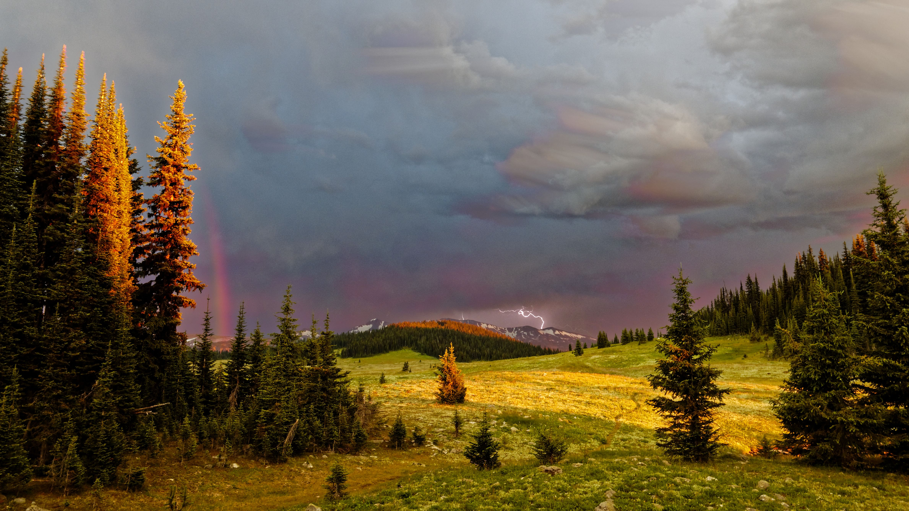

Where to start...
I grew up in Calgary where I was happiest outdoors. I learned to love the mountains and all the activities I found there.
In my early teens my father introduced me to climbing mountains and since then standing on top of peaks is something I am willing to suffer for to experience. Now in my late 30's I have climbed more peaks than I can recount and have no reason to stop.

My other long-time love is skiing in all it's forms. I am an expert downhill, reasonably strong cross-country, love exploring on touring skis in the backcountry, and have spent many years working as a Ski Patroller at resorts near Vancouver

When my partner decided to work on a degree at UBC I certainly couldn't let them go alone so I moved to Vancouver too. That was 12 years ago, and while we have had our issues with the housing market (who doesn't?) living in the lower mainland and for a couple years in Squamish, we now live in New Westminster.
While in Calgary I completed a bachelor's degree in Applied Policy Studies at Mount Royal University and then quickly decided I didn't want a career that kept me sitting at a desk. I took up carpentry with a long time master craftsman and learned skills that will last me a lifetime. After moving to the Lower Mainland I began a variety of service jobs ranging from selling gear at MEC to guiding trips in the backcountry of BC.
Computers have long been a hobby of mine, and while my experience doesn't stretch to the dark ages, it does include the middle ages with such memories as: 14.4k modems and that horrific noise, image-less web browsing, getting a coffee while waiting for pages to load, and a time before Google. I have always been handy with computer hardware, and a proponent of free and open source software, but my experience was almost always as user. I have long dabbled in programming, mostly limited to copy+paste coding to modify applications for my own needs.
Some hobbies of mine include:
Video Games -- I am a connoisseur who enjoys most categories of games; some of my top picks would be Katamary Damacy, Dark Souls, Shadow of the Colossus, World of Warcraft, and Ni No Kumi.
Photography -- as with computers my photography experience is quite extensive. I learned shooting black and white film on a camera my Grandpa handed down to me, sharpened my skills shooting slide film, and have adapted my skills to the modern world brought about by digital cameras and software darkroom.
RC vehicles -- which these days is mostly small (less than 250g) helicopters. I spend as much time tinkering and repairing as flying.
Running wild with fan theories -- toddler television leaves a lot of continuity holes and I enjoy speculating about these missing pieces. Ask me about Paw Patrol if you want to waste half an hour.
I have recently been driving a school bus as a way to stay closer to home and help with childcare, which has left me some spare time to consider where I want to move with my career. As an avid video game player I have dreams of getting involved in their creation, but my grandest dream would be the creation of an "Illustrated Primer for Girls" to revolutionize education (and not just for girls). There are many products on the market that aim to educate, but none have met my aspirations; in fact most have been underwhelming examples of poor software designed to cost considerable money for government entities to buy.
Since a dream like that doesn't create itself I decided really learning to program would be a good first step.